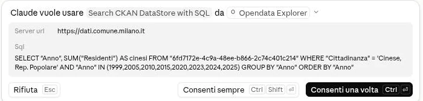
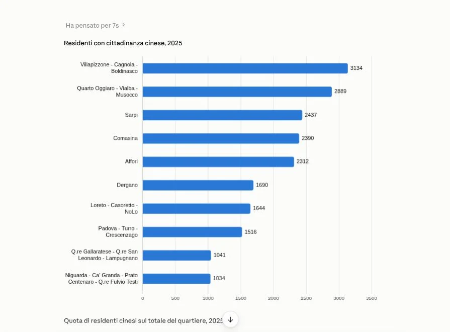
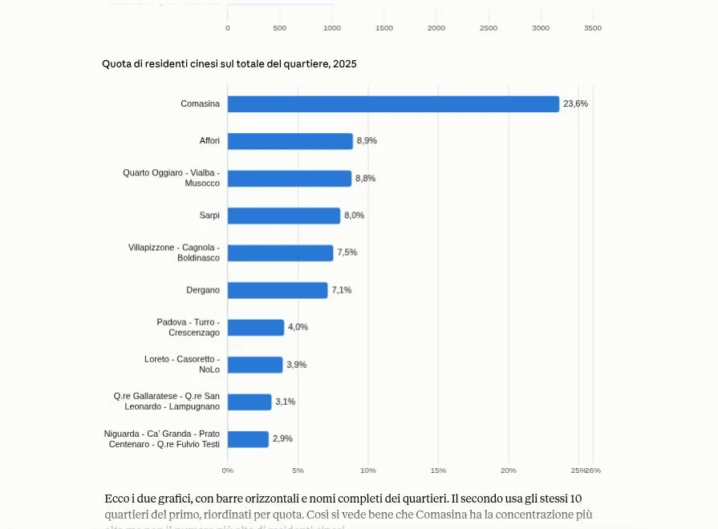
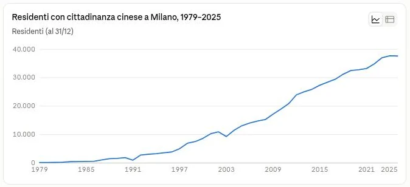
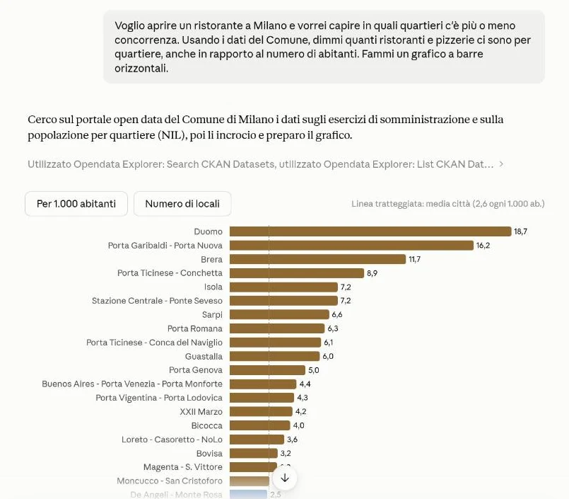
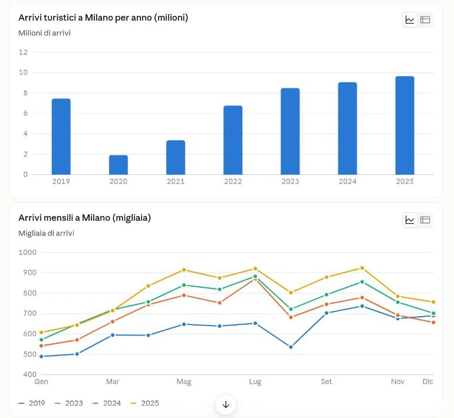
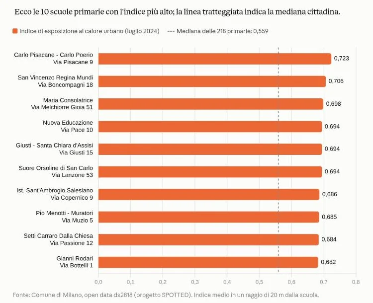
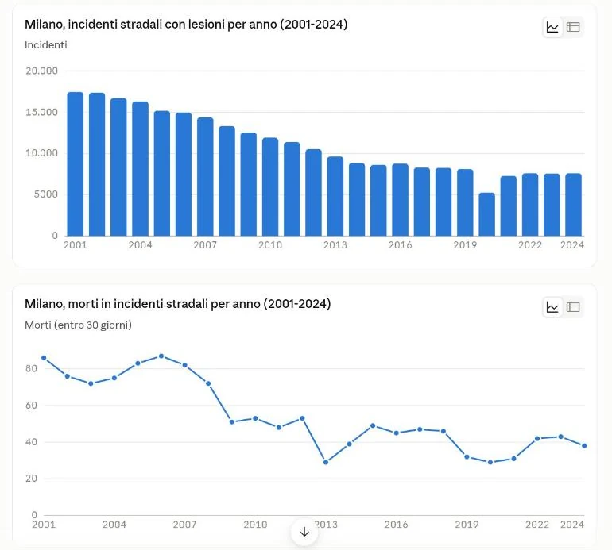
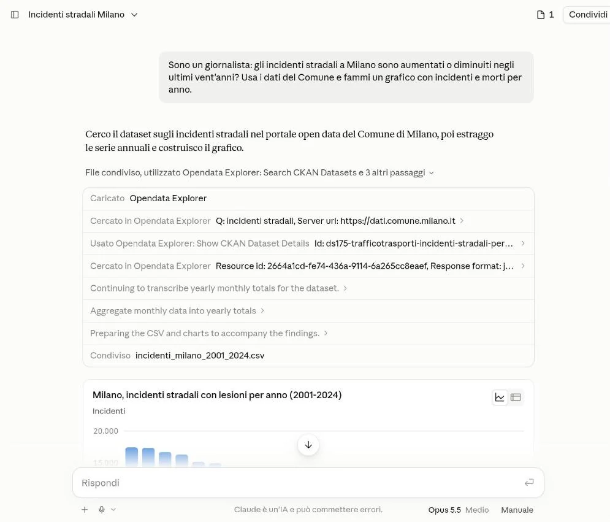
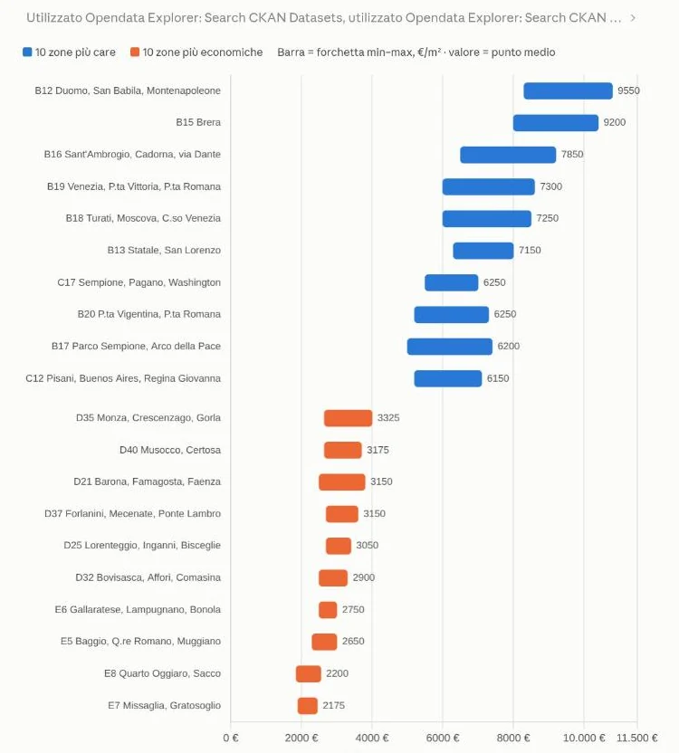

Sei domande in italiano, poste a un assistente AI collegato al portale open data del Comune di Milano (dati.comune.milano.it). Qui trovi le domande esattamente come sono state scritte, i passaggi svolti dall’AI, la query SQL dove è visibile e i risultati.
Come leggere questa pagina. Sono i risultati ottenuti il 30 settembre 2026 e mostrati alla Milano Digital Week il 1° ottobre. Le tabelle riportano i numeri letti negli screenshot delle chat; i dati del portale possono nel frattempo essere stati aggiornati.
L’AI può sbagliare: per i numeri che contano si verifica sul dataset indicato.
Il portale e lo strumento
Dati Milano è il portale open data del Comune, costruito su CKAN. Il 30 settembre 2026 conteneva 2.605 dataset, tutti pubblicati da un’unica organizzazione, raggruppati in 13 temi del vocabolario europeo DCAT-AP. L’AI lo interroga tramite il CKAN MCP Server, un server open source (licenza MIT) che le mette a disposizione una ventina di strumenti, tutti di sola lettura.
2.605dataset
13temi
2.492dataset con file CSV
20strumenti, solo lettura
Come arriva alla risposta
domanda in italiano
cerca il dataset
ne legge la struttura
scrive ed esegue la query SQL
calcola e risponde con la fonte
Dataset per tema
Istruzione, cultura e sport692
Economia e finanze562
Governo e settore pubblico452
Popolazione e società309
Trasporti256
Ambiente158
Scienza e tecnologia48
Temi internazionali33
Energia25
Agricoltura24
Salute24
Giustizia22
Regioni e città0
I numeri per tema contano i file, non la quantità di informazione: la classificazione è sbilanciata (per esempio, 171 dataset riguardano la sola Area C).
1 · Quanti cinesi ci sono a Milano?
Domanda da barpopolazione
La domanda
Ieri sera al bar un amico chiedeva, scherzando, “ma quanti cinesi ci sono a Milano?”. Cosa dicono davvero i dati del Comune? E in quali quartieri vivono?
Dati usati
ds74 — Stranieri per cittadinanza, dal 1979 al 2025
ds27 — Residenti per cittadinanza e quartiere, dal 1999 al 2025 (oltre 3 milioni di righe, interrogato via DataStore)
Query scritta dall’AI
L’AI scrive l’SQL e chiede il permesso prima di eseguirlo. Questa è la richiesta così come compare in chat:
SELECT "Anno", SUM("Residenti") AS cinesi
FROM "6fd7172e-4c9a-48ee-b866-2c74c401c214"
WHERE "Cittadinanza" = 'Cinese, Rep. Popolare'
AND "Anno" IN (1999,2005,2010,2015,2020,2023,2024,2025)
GROUP BY "Anno" ORDER BY "Anno"
Una ricerca per “Cina” non trovava nulla: nei dati il valore è “Cinese, Rep. Popolare”. L’AI se n’è accorta e ha corretto la ricerca.

La richiesta di permesso, con la query visibile prima dell’esecuzione.
Risultato
A fine 2025 i residenti con cittadinanza cinese sono 37.641, il 2,7% di 1.399.079 abitanti. Tra gli stranieri residenti (295.805) sono circa uno su otto.
Sono la seconda comunità straniera, dopo gli egiziani (41.957) e appena davanti ai filippini (35.638).
Erano circa 7.500 nel 1999, 19.000 nel 2010, 32.800 nel 2020. Poi la crescita si è fermata: 37.737 nel 2024 e 37.641 nel 2025.
La “Chinatown” di via Paolo Sarpi è solo terza per numero di residenti. A Comasina il 23,6% dei residenti ha cittadinanza cinese.
Quartieri con più residenti con cittadinanza cinese, 2025
La domanda e la risposta in chat.Grafici prodotti dall’AI

Residenti per quartiere.

Quota sul totale del quartiere.

Andamento 1979–2025.
Limite dichiarato dall’AI. Il dato conta la cittadinanza, non l’origine: chi è nato in Cina ed è diventato cittadino italiano non è incluso.
2 · Dove aprire un ristorante?
Chi vuole aprire un’attivitàeconomia
La domanda
Voglio aprire un ristorante a Milano e vorrei capire in quali quartieri c’è più o meno concorrenza. Usando i dati del Comune, dimmi quanti ristoranti e pizzerie ci sono per quartiere, anche in rapporto al numero di abitanti. Fammi un grafico a barre orizzontali.
Dati usati e passaggi
ds58 — Pubblici esercizi in piano (aggiornato al 31/08/2026, 9.269 esercizi georeferenziati, con quartiere e tipologia)
ds27 — popolazione residente per quartiere, per il rapporto con gli abitanti
Passaggi: cerca “pubblici esercizi”, legge il dataset, conta i locali per quartiere con una query SQL, cerca la popolazione per quartiere, la interroga e unisce i due conteggi.
Risultato
I ristoranti e le pizzerie censiti sono 3.649. Per numero assoluto vincono Buenos Aires – Porta Venezia (724) e Duomo (677).
In rapporto agli abitanti la media della città è di 2,6 locali ogni 1.000 residenti.
Ristoranti e pizzerie ogni 1.000 abitanti
Quartiere
Ogni 1.000 ab.
Duomo
18,7
Porta Garibaldi – Porta Nuova
16,2
Brera
11,7
Porta Ticinese – Conchetta
8,9
Isola
7,2
…
Barona
0,2
Comasina
0,2
Bruzzano
0,2

Il grafico prodotto dall’AI, con la media della città tratteggiata.I passaggi dell’AI, come compaiono in chatLa sequenza di chiamate agli strumenti del connettore.
Da sistemare, se si riusa il lavoro. Tre quartieri non si abbinano tra i due dataset per differenze nei nomi (per esempio Niguarda).
3 · Quando arrivano i turisti?
Chi lavora nel turismoeconomia
La domanda
Lavoro per un’azienda di servizi turistici a Milano. Secondo i dati del Comune, come sono andati gli arrivi di turisti dal 2019 al 2025 e quali sono i mesi di punta? Fammi un grafico.
Dati usati e passaggi
ds2957 — Arrivi turistici totali per mese, serie storica 2019–2025
Passaggi: cerca “turismo arrivi”, trova il dataset giusto, ne legge la risorsa, calcola i totali annui e i mesi di punta.
Risultato
7,46 milioni di arrivi nel 2019, 1,92 milioni nel 2020 e 9,66 milioni nel 2025, il valore più alto della serie.
I mesi di punta nel 2025 sono ottobre e luglio.

Arrivi per anno e per mese, come li ha disegnati l’AI.I passaggi dell’AI, come compaiono in chatLa sequenza di chiamate agli strumenti del connettore.
4 · Quali scuole soffrono di più il caldo?
Giornalismoambiente
La domanda
Sono un giornalista e voglio scrivere del caldo nelle scuole di Milano. Ci sono dati del Comune su quanto le scuole primarie sono esposte al calore urbano? Quali sono le più esposte? Fammi un grafico a barre orizzontali delle prime 10.
Dati usati e passaggi
ds2818 — Esposizione al calore urbano delle scuole primarie (luglio 2024): indice medio in un raggio di 20 m dalla scuola, calcolato dal progetto europeo SPOTTED. Esistono dataset analoghi (ds2817, ds2819).
Passaggi: cerca “scuole calore”, apre il dataset, interroga il DataStore con SQL, ricava la distribuzione per inquadrare la storia e disegna il grafico.
Risultato
Scuole primarie con l’indice di esposizione più alto (mediana delle 218 primarie: 0,559)
Scuola
Indirizzo
Indice
Carlo Pisacane – Carlo Poerio
Via Pisacane 9
0,723
San Vincenzo Regina Mundi
Via Boncompagni 18
0,706
Maria Consolatrice
Via Melchiorre Gioia 51
0,698
Nuova Educazione
Via Pace 10
0,694
Giusti – Santa Chiara d’Assisi
Via Giusti 15
0,694

Le prime 10 scuole, con la mediana cittadina tratteggiata. Fonte indicata dall’AI: Comune di Milano, open data ds2818 (progetto SPOTTED).I passaggi dell’AI, come compaiono in chatLa sequenza di chiamate agli strumenti del connettore.
5 · Gli incidenti stradali sono aumentati o diminuiti?
Giornalismotrasporti
La domanda
Sono un giornalista: gli incidenti stradali a Milano sono aumentati o diminuiti negli ultimi vent’anni? Usa i dati del Comune e fammi un grafico con incidenti e morti per anno.
Dati usati e passaggi
ds175 — Incidenti stradali, serie 2001–2024 (dati mensili, aggregati dall’AI in totali annui)
Passaggi: cerca “incidenti stradali”, apre il dataset, legge la risorsa, aggrega i mesi in anni e produce un CSV (incidenti_milano_2001_2024.csv) insieme ai grafici.
Risultato
Gli incidenti stradali con lesioni sono scesi da 17.458 nel 2001 a 7.602 nel 2024.
I morti (entro 30 giorni) sono scesi da 86 a 38.

Incidenti con lesioni e morti per anno, 2001–2024.I passaggi dell’AI, come compaiono in chat

La sequenza di chiamate agli strumenti del connettore.
6 · Quanto costa comprare casa, zona per zona?
Chi lavora nell’immobiliareeconomia
La domanda
Lavoro in un’agenzia immobiliare. Con i dati del Comune di Milano, quali sono le zone con i prezzi di compravendita delle abitazioni più alti e più bassi nell’ultimo semestre disponibile? Fammi un grafico a barre orizzontali.
Dati usati e passaggi
ds2940 — Quotazioni immobiliari dell’Osservatorio del Mercato Immobiliare (OMI), compravendita, per semestre e zona
Passaggi: cerca i prezzi di compravendita, verifica se esistono semestri più recenti, trova che l’ultimo pubblicato è il 2024/2, interroga la risorsa con SQL e verifica quali zone del centro mancano.
Risultato
Valori in €/m², punto medio della forchetta minima–massima, ultimo semestre pubblicato (2024/2)
Zona OMI
€/m²
B12 Duomo, San Babila, Montenapoleone
9.550
B15 Brera
9.200
B16 Sant’Ambrogio, Cadorna, via Dante
7.850
…
E5 Baggio, Q.re Romano, Muggiano
2.650
E8 Quarto Oggiaro, Sacco
2.200
E7 Missaglia, Gratosoglio
2.175

Le 10 zone più care e le 10 più economiche. La barra è la forchetta minima–massima, il numero è il punto medio.I passaggi dell’AI, come compaiono in chatLa sequenza di chiamate agli strumenti del connettore.
Provalo
Il connettore ha un indirizzo pubblico e gratuito, senza autenticazione, da aggiungere come “connettore” a un assistente AI che supporta i server MCP. La quota di 100.000 richieste al giorno è condivisa tra tutti gli utenti: va bene per provare, non per un uso intensivo.
https://ckan-mcp-server.andy-pr.workers.dev/mcp
Una prima domanda per verificare che funzioni: “Quanti dataset ci sono su dati.comune.milano.it e quali sono i temi principali?”. La risposta giusta è un numero intorno a 2.600 e l’elenco dei temi; se l’assistente risponde “a memoria” o cercando sul web, il connettore non è attivo nella chat. Le guide per ChatGPT, Claude, Le Chat, Perplexity e gli assistenti da terminale sono nel repository del progetto.